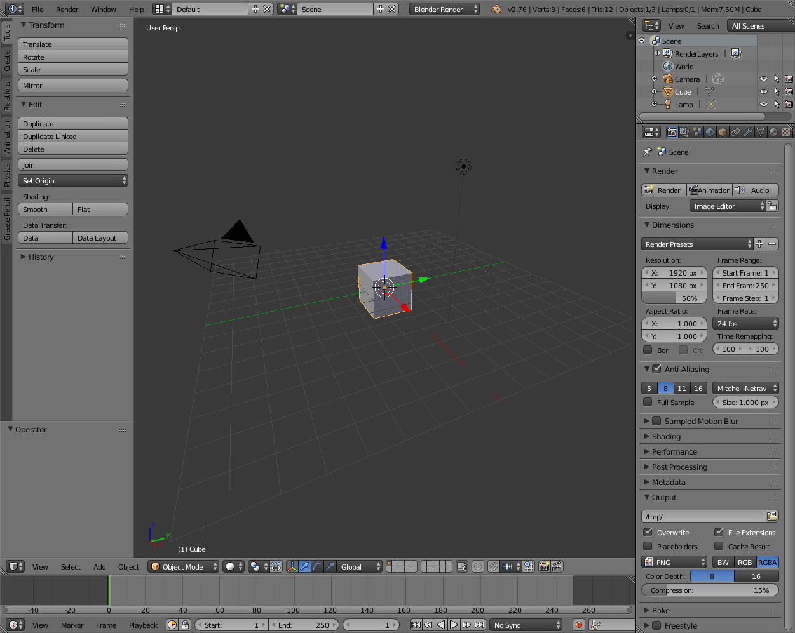

Introduction¶
This tutorial serves as a standalone introduction to using Blender for 3D printing. It intentionally skips over parts of Blender to prioritize getting up to speed as quickly as possible. For further learning, there are many resources, including:
This tutorial is broken into three sections: Interface, Mesh Modeling, 3D Printing.
Starting Blender¶
After starting Blender and clicking to dismiss the splash screen, we see this default interface:

Here’s an annotated version of the default layout:
Blender’s default layout
The interface is very customizable but we will be using this default layout. Most of our time will be spent in the 3D View. The sections are:
- Info
- 3D View
- Outliner (used for complex scenes; we will be ignore this)
- Properties
- Timeline (used for animation; we will ignore this)
See also
The Blender manual on the Interface has details about sections of the interface.